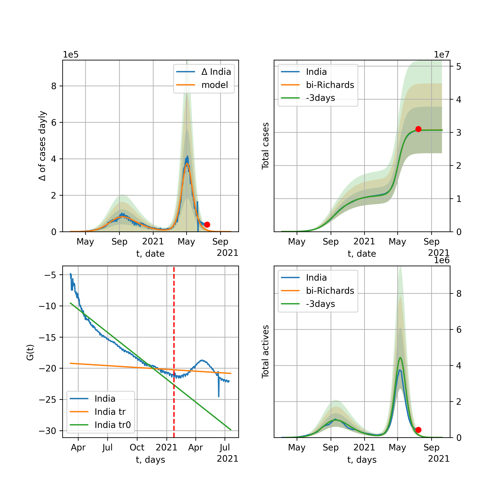
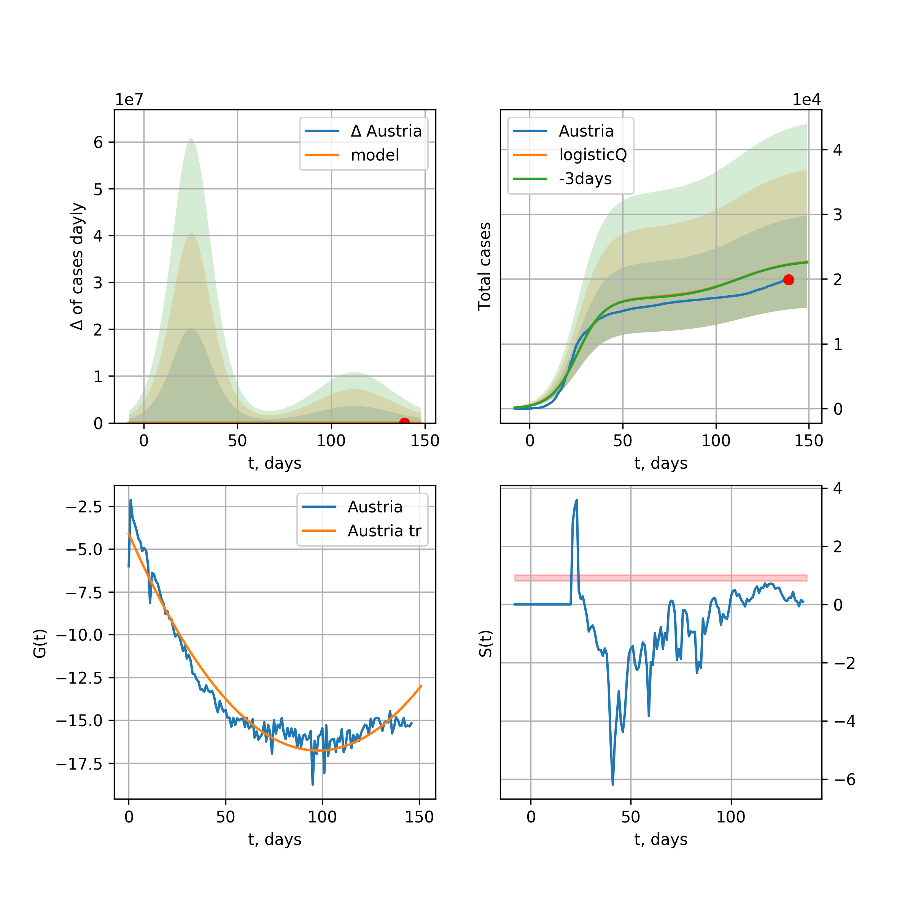
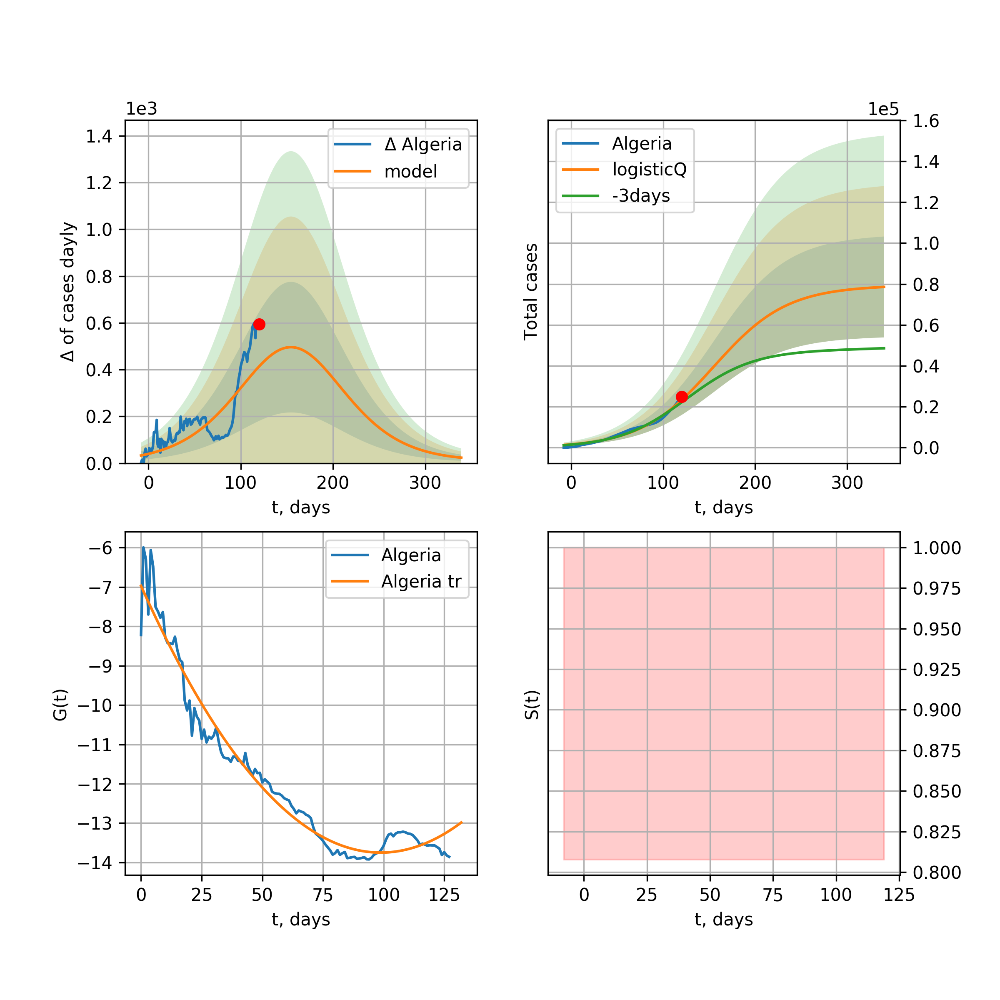

Multi-logistic model of COVID-19 dynamics
Model, code, results
Project maintained by algmaknick Hosted on GitHub Pages — Theme by mattgraham
World

World data at: 2020-05-17
+3 day model MAPE: 0.019540
model: bi-Richards
coeffs: [ 6.46675010e+06 2.70977176e+00 -2.79852874e+01 1.43377420e-02]
S.Korea scenario coeffs: [0.36242246, 2.56241634, 1.84890887, 0.13324732]
rational stdev: 0.154611
forecast at the end of period: +490 days
deltaDaycases: 2689
total cases: 8717670 ± 1347848
total death: 574618 ± 266526
bi-Richards approximation splitting point: 50
trend coefficient of determination: 0.553029
intercept: -1.639779
slope: -0.059578
trend coefficient of determination: 0.902187
intercept: -0.787943
slope: -0.030895
European Union

European Union data at: 2020-05-17
+3 day model MAPE: 0.011640
model: logisticQ
coeffs: [ 1.10196816e+06 6.21301398e-07 5.00098792e+01 -1.81645734e+05]
S.Korea scenario coeffs: [0.35416971, 0.02606324, 4.35859408, 19.30413219]
rational stdev: 0.428315
forecast at the end of period: +265 days
deltaDaycases: 8
total cases: 1492098 ± 639087
total death: 159178 ± 204534
trend coefficient of determination: 0.988848
intercept_: -3.0402634520175162
coeffs_: [ 0. -0.32613759 0.00166076]
USA

USA data at: 2020-05-17
+3 day model MAPE: 0.010915
model: Richards
coeffs: [ 1.88599514e+06 3.01832451e+00 -4.52250194e+01 1.62213165e-02]
S.Korea scenario coeffs: [0.36242246, 2.56241634, 1.84890887, 0.13324732]
rational stdev: 0.315468
forecast at the end of period: +342 days
deltaDaycases: 1212
total cases: 2493056 ± 786480
total death: 148470 ± 140512
trend coefficient of determination: 0.951079
intercept: -1.033170
slope: -0.047080
Spain

Spain data at: 2020-05-17
+3 day model MAPE: 0.008531
model: Richards
coeffs: [ 2.87225657e+05 8.86800911e+00 -4.90140711e+01 7.18831049e-03]
S.Korea scenario coeffs: [0.36242246, 2.56241634, 1.84890887, 0.13324732]
rational stdev: 0.205294
forecast at the end of period: +300 days
deltaDaycases: 94
total cases: 386913 ± 79430
total death: 38521 ± 23724
trend coefficient of determination: 0.948322
intercept: -0.790567
slope: -0.058140
Italy

Italy data at: 2020-05-17
+3 day model MAPE: 0.001909
model: Richards
coeffs: [ 2.34987057e+05 6.59945285e+00 -5.17642985e+01 9.16092676e-03]
S.Korea scenario coeffs: [0.36242246, 2.56241634, 1.84890887, 0.13324732]
rational stdev: 0.072199
forecast at the end of period: +272 days
deltaDaycases: 140
total cases: 313115 ± 22606
total death: 44318 ± 9599
trend coefficient of determination: 0.983199
intercept: -1.077856
slope: -0.057094
United Kingdom

United Kingdom data at: 2020-05-17
+3 day model MAPE: 0.006546
model: Richards
coeffs: [ 3.10085013e+05 3.91995822e+00 -5.83713858e+01 1.23374442e-02]
S.Korea scenario coeffs: [0.36242246, 2.56241634, 1.84890887, 0.13324732]
rational stdev: 0.113378
forecast at the end of period: +370 days
deltaDaycases: 142
total cases: 413511 ± 46883
total death: 58771 ± 19989
trend coefficient of determination: 0.945767
intercept: -1.396482
slope: -0.045219
France

France data at: 2020-05-17
+3 day model MAPE: 0.004853
model: Richards
coeffs: [1.78409467e+05 2.94404021e-01 2.10271911e+01 3.57989675e-01]
S.Korea scenario coeffs: [0.36242246, 2.56241634, 1.84890887, 0.13324732]
rational stdev: 0.183967
forecast at the end of period: +132 days
deltaDaycases: 114
total cases: 239842 ± 44123
total death: 37542 ± 20719
trend coefficient of determination: 0.951019
intercept: -2.866493
slope: -0.099730
Germany

Germany data at: 2020-05-17
+3 day model MAPE: 0.004664
model: Richards
coeffs: [ 1.76427197e+05 8.84410264e+00 -3.90601941e+01 9.45288024e-03]
S.Korea scenario coeffs: [0.36242246, 2.56241634, 1.84890887, 0.13324732]
rational stdev: 0.746764
forecast at the end of period: +202 days
deltaDaycases: 87
total cases: 237280 ± 177192
total death: 10811 ± 24219
trend coefficient of determination: 0.955786
intercept: -1.135183
slope: -0.069076
Turkey

Turkey data at: 2020-05-17
+3 day model MAPE: 0.009135
model: Richards
coeffs: [ 1.57892306e+05 6.31430189e+00 -3.34119674e+01 1.19132191e-02]
S.Korea scenario coeffs: [0.36242246, 2.56241634, 1.84890887, 0.13324732]
rational stdev: 0.203838
forecast at the end of period: +196 days
deltaDaycases: 223
total cases: 205701 ± 41929
total death: 5698 ± 3484
trend coefficient of determination: 0.725759
intercept: -0.981658
slope: -0.058178
Russia

Russia data at: 2020-05-17
+3 day model MAPE: 0.012787
model: logisticQ
coeffs: [ 3.85426011e+05 4.49134209e-06 6.13340399e+01 -2.50193201e+04]
S.Korea scenario coeffs: [0.35416971, 0.02606324, 4.35859408, 19.30413219]
rational stdev: 0.412310
forecast at the end of period: +286 days
deltaDaycases: 51
total cases: 521033 ± 214827
total death: 4865 ± 6017
trend coefficient of determination: 0.965336
intercept_: -3.516197249300329
coeffs_: [ 0. -0.22156111 0.00074575]
Iran

Iran data at: 2020-05-17
+3 day model MAPE: 0.022390
model: Richards
coeffs: [ 1.26309097e+05 3.81637278e+00 -5.71890208e+01 1.25325563e-02]
S.Korea scenario coeffs: [0.36242246, 2.56241634, 1.84890887, 0.13324732]
rational stdev: 0.282661
forecast at the end of period: +314 days
deltaDaycases: 108
total cases: 164891 ± 46608
total death: 9586 ± 8128
trend coefficient of determination: 0.895638
intercept: -1.167544
slope: -0.046008
Brazil

Brazil data at: 2020-05-17
+3 day model MAPE: 0.047315
model: logisticQ
coeffs: [ 6.07445370e+05 8.04783155e-06 7.30922194e+01 -1.02351512e+04]
S.Korea scenario coeffs: [0.35416971, 0.02606324, 4.35859408, 19.30413219]
rational stdev: 0.402597
forecast at the end of period: +335 days
deltaDaycases: 257
total cases: 816313 ± 328645
total death: 54590 ± 65933
trend coefficient of determination: 0.874539
intercept_: -4.127956687403035
coeffs_: [ 0. -0.28717591 0.00191697]
Canada

Canada data at: 2020-05-17
+3 day model MAPE: 0.000360
model: Richards
coeffs: [ 1.06208127e+05 2.78935364e+00 -6.41757017e+01 1.57559192e-02]
S.Korea scenario coeffs: [0.36242246, 2.56241634, 1.84890887, 0.13324732]
rational stdev: 0.178021
forecast at the end of period: +420 days
deltaDaycases: 34
total cases: 142333 ± 25338
total death: 10687 ± 5707
trend coefficient of determination: 0.951360
intercept: -1.540127
slope: -0.046983
Belgium

Belgium data at: 2020-05-17
+3 day model MAPE: 0.001831
model: Richards
coeffs: [ 5.80896361e+04 8.53398656e-01 -9.95719586e+00 8.51868774e-02]
S.Korea scenario coeffs: [0.36242246, 2.56241634, 1.84890887, 0.13324732]
rational stdev: 0.383724
forecast at the end of period: +202 days
deltaDaycases: 37
total cases: 77608 ± 29780
total death: 12708 ± 14629
trend coefficient of determination: 0.945944
intercept: -1.683777
slope: -0.064937
Peru

Peru data at: 2020-05-17
+3 day model MAPE: 0.043685
model: logisticQ
coeffs: [ 1.30638240e+05 3.70670341e-06 5.52214198e+01 -2.75658414e+04]
S.Korea scenario coeffs: [0.35416971, 0.02606324, 4.35859408, 19.30413219]
rational stdev: 0.369179
forecast at the end of period: +244 days
deltaDaycases: 75
total cases: 175427 ± 64764
total death: 5034 ± 5575
trend coefficient of determination: 0.972724
intercept_: -3.7132951964627416
coeffs_: [ 0. -0.27937683 0.00182054]
Netherlands

Netherlands data at: 2020-05-17
+3 day model MAPE: 0.000429
model: Richards
coeffs: [4.61306093e+04 4.50372400e-01 3.83973685e+00 1.63729029e-01]
S.Korea scenario coeffs: [0.36242246, 2.56241634, 1.84890887, 0.13324732]
rational stdev: 0.166628
forecast at the end of period: +202 days
deltaDaycases: 23
total cases: 61905 ± 10315
total death: 7992 ± 3995
trend coefficient of determination: 0.977477
intercept: -1.694704
slope: -0.075207
India

India data at: 2020-05-17
+3 day model MAPE: 0.003984
model: Richards
coeffs: [ 1.14727588e+06 7.15807402e-01 -6.09423524e+01 2.80376505e-02]
S.Korea scenario coeffs: [0.36242246, 2.56241634, 1.84890887, 0.13324732]
rational stdev: 0.335425
forecast at the end of period: +930 days
deltaDaycases: 327
total cases: 1512140 ± 507210
total death: 47627 ± 47925
trend coefficient of determination: 0.473188
intercept: -1.727123
slope: -0.021571
Switzerland

Switzerland data at: 2020-05-17
+3 day model MAPE: 0.003813
model: logisticQ
coeffs: [ 2.97933847e+04 7.73904116e-07 2.57792425e+01 -1.89944768e+05]
S.Korea scenario coeffs: [0.35416971, 0.02606324, 4.35859408, 19.30413219]
rational stdev: 0.347784
forecast at the end of period: +90 days
deltaDaycases: 16
total cases: 40118 ± 13952
total death: 2467 ± 2573
trend coefficient of determination: 0.984790
intercept_: -3.721268001045182
coeffs_: [ 0. -0.32557739 0.0020471 ]
Ecuador

Ecuador data at: 2020-05-17
+3 day model MAPE: 0.001703
model: Richards
coeffs: [ 6.66388459e+04 2.50560549e+00 -9.78198874e+01 1.20658385e-02]
S.Korea scenario coeffs: [0.36242246, 2.56241634, 1.84890887, 0.13324732]
rational stdev: 0.324702
forecast at the end of period: +650 days
deltaDaycases: 14
total cases: 89313 ± 29000
total death: 7364 ± 7173
trend coefficient of determination: 0.197650
intercept: -1.888457
slope: -0.046420
Portugal

Portugal data at: 2020-05-17
+3 day model MAPE: 0.008148
model: Richards
coeffs: [ 3.00117812e+04 7.01122119e+00 -4.06598247e+01 9.81849171e-03]
S.Korea scenario coeffs: [0.36242246, 2.56241634, 1.84890887, 0.13324732]
rational stdev: 0.226953
forecast at the end of period: +230 days
deltaDaycases: 27
total cases: 39672 ± 9003
total death: 1664 ± 1132
trend coefficient of determination: 0.898773
intercept: -0.797530
slope: -0.061448
Saudi Arabia

Saudi Arabia data at: 2020-05-17
+3 day model MAPE: 0.057780
model: logisticQ
coeffs: [ 7.92095212e+04 3.77440074e-06 5.98461366e+01 -2.54594637e+04]
S.Korea scenario coeffs: [0.35416971, 0.02606324, 4.35859408, 19.30413219]
rational stdev: 0.332727
forecast at the end of period: +272 days
deltaDaycases: 30
total cases: 106637 ± 35481
total death: 607 ± 605
trend coefficient of determination: 0.846373
intercept_: -4.390648349171388
coeffs_: [ 0. -0.22416499 0.00132477]
Sweden

Sweden data at: 2020-05-17
+3 day model MAPE: 0.009105
model: Richards
coeffs: [ 4.55382479e+04 1.76482260e+00 -5.73034844e+01 2.04667583e-02]
S.Korea scenario coeffs: [0.36242246, 2.56241634, 1.84890887, 0.13324732]
rational stdev: 0.269573
forecast at the end of period: +440 days
deltaDaycases: 30
total cases: 59388 ± 16009
total death: 7248 ± 5861
trend coefficient of determination: 0.824289
intercept: -1.382489
slope: -0.038077
Pakistan

Pakistan data at: 2020-05-17
+3 day model MAPE: 0.024958
model: Richards
coeffs: [5.64180542e+05 2.26487301e-01 9.99094318e-01 8.57253637e-02]
S.Korea scenario coeffs: [0.36242246, 2.56241634, 1.84890887, 0.13324732]
rational stdev: 0.398731
forecast at the end of period: +1210 days
deltaDaycases: 24
total cases: 764993 ± 305026
total death: 16398 ± 19615
trend coefficient of determination: 0.380334
intercept: -2.293939
slope: -0.023645
Ireland

Ireland data at: 2020-05-17
+3 day model MAPE: 0.008616
model: logisticQ
coeffs: [ 2.39471109e+04 2.74161545e-06 3.50933910e+01 -4.69004576e+04]
S.Korea scenario coeffs: [0.35416971, 0.02606324, 4.35859408, 19.30413219]
rational stdev: 0.323801
forecast at the end of period: +132 days
deltaDaycases: 26
total cases: 32018 ± 10367
total death: 2048 ± 1989
trend coefficient of determination: 0.981354
intercept_: -3.753918061348477
coeffs_: [ 0. -0.27852346 0.00168326]
Mexico

Mexico data at: 2020-05-17
+3 day model MAPE: 0.011796
model: Richards
coeffs: [ 2.99789587e+05 4.57311415e-01 -3.25318831e+01 5.72867445e-02]
S.Korea scenario coeffs: [0.36242246, 2.56241634, 1.84890887, 0.13324732]
rational stdev: 0.121310
forecast at the end of period: +790 days
deltaDaycases: 38
total cases: 404076 ± 49018
total death: 42502 ± 15467
trend coefficient of determination: 0.864921
intercept: -2.045181
slope: -0.030168
Singapore

Singapore data at: 2020-05-17
+3 day model MAPE: 0.025587
model: bi-Richards
coeffs: [2.08165066e+04 7.51526237e+00 3.55832005e+01 1.23826805e-02]
S.Korea scenario coeffs: [0.36242246, 2.56241634, 1.84890887, 0.13324732]
rational stdev: 0.279439
forecast at the end of period: +230 days
deltaDaycases: 23
total cases: 36881 ± 10306
total death: 28 ± 23
bi-Richards approximation splitting point: 60
trend coefficient of determination: 0.128067
intercept: -2.329776
slope: -0.021909
trend coefficient of determination: 0.416160
intercept: -0.851076
slope: -0.023990
Chile

Chile data at: 2020-05-17
+3 day model MAPE: 0.042598
model: bi-Richards
coeffs: [ 1.59674395e+05 1.83581691e+00 -1.41037425e+01 2.64544446e-02]
S.Korea scenario coeffs: [0.36242246, 2.56241634, 1.84890887, 0.13324732]
rational stdev: 0.019680
forecast at the end of period: +475 days
deltaDaycases: 29
total cases: 232289 ± 4571
total death: 2387 ± 140
bi-Richards approximation splitting point: 40
trend coefficient of determination: 0.829576
intercept: -2.036806
slope: -0.044446
trend coefficient of determination: 0.021163
intercept: -2.876281
slope: -0.005635
Israel

Israel data at: 2020-05-17
+3 day model MAPE: 0.002552
model: Richards
coeffs: [ 1.71040656e+04 6.17261763e+00 -3.66684010e+01 1.42494868e-02]
S.Korea scenario coeffs: [0.36242246, 2.56241634, 1.84890887, 0.13324732]
rational stdev: 0.149487
forecast at the end of period: +202 days
deltaDaycases: 5
total cases: 23127 ± 3457
total death: 378 ± 169
trend coefficient of determination: 0.914724
intercept: -1.030667
slope: -0.092003
Austria

Austria data at: 2020-05-17
+3 day model MAPE: 0.005769
model: logisticQ
coeffs: [ 1.54208773e+04 9.23190415e-07 2.35899186e+01 -2.06862948e+05]
S.Korea scenario coeffs: [0.35416971, 0.02606324, 4.35859408, 19.30413219]
rational stdev: 0.323007
forecast at the end of period: +76 days
deltaDaycases: 6
total cases: 20818 ± 6724
total death: 806 ± 781
trend coefficient of determination: 0.980691
intercept_: -2.7310486066947597
coeffs_: [ 0. -0.35965966 0.00249666]
Belarus

Belarus data at: 2020-05-17
+3 day model MAPE: 0.007964
model: Richards
coeffs: [ 5.59469725e+04 1.84212090e+00 -5.00847986e+01 2.51044612e-02]
S.Korea scenario coeffs: [0.36242246, 2.56241634, 1.84890887, 0.13324732]
rational stdev: 0.136897
forecast at the end of period: +370 days
deltaDaycases: 31
total cases: 74136 ± 10149
total death: 412 ± 169
trend coefficient of determination: 0.844124
intercept: -1.688011
slope: -0.045178
Japan

Japan data at: 2020-05-17
+3 day model MAPE: 0.007744
model: Richards
coeffs: [1.61966914e+04 1.06380989e-01 7.82935010e+01 1.34763576e+00]
S.Korea scenario coeffs: [0.36242246, 2.56241634, 1.84890887, 0.13324732]
rational stdev: 0.798667
forecast at the end of period: +160 days
deltaDaycases: 3
total cases: 21988 ± 17561
total death: 1004 ± 2405
trend coefficient of determination: 0.775384
intercept: -6.593062
slope: -0.104814
Qatar

Qatar data at: 2020-05-17
+3 day model MAPE: 0.027738
model: Richards
coeffs: [ 2.20384910e+05 5.14816022e-01 -3.17119740e+01 4.72333471e-02]
S.Korea scenario coeffs: [0.36242246, 2.56241634, 1.84890887, 0.13324732]
rational stdev: 0.779368
forecast at the end of period: +664 days
deltaDaycases: 121
total cases: 283877 ± 221245
total death: 130 ± 303
trend coefficient of determination: 0.125678
intercept: -2.483265
slope: -0.014681
Poland

Poland data at: 2020-05-17
+3 day model MAPE: 0.022126
model: Richards
coeffs: [ 2.38358493e+04 3.67943895e+00 -6.21332151e+01 1.20485827e-02]
S.Korea scenario coeffs: [0.36242246, 2.56241634, 1.84890887, 0.13324732]
rational stdev: 0.283264
forecast at the end of period: +342 days
deltaDaycases: 23
total cases: 30716 ± 8700
total death: 1533 ± 1302
trend coefficient of determination: 0.779850
intercept: -1.258591
slope: -0.043233
UAE

UAE data at: 2020-05-17
+3 day model MAPE: 0.029309
model: Richards
coeffs: [ 4.75968216e+04 1.15688399e+00 -6.21254976e+01 3.07391738e-02]
S.Korea scenario coeffs: [0.36242246, 2.56241634, 1.84890887, 0.13324732]
rational stdev: 0.140844
forecast at the end of period: +454 days
deltaDaycases: 26
total cases: 62546 ± 8809
total death: 589 ± 248
trend coefficient of determination: 0.833810
intercept: -2.056034
slope: -0.037354
Romania

Romania data at: 2020-05-17
+3 day model MAPE: 0.005850
model: Richards
coeffs: [ 2.10984931e+04 4.16077879e+00 -5.77105071e+01 1.15870983e-02]
S.Korea scenario coeffs: [0.36242246, 2.56241634, 1.84890887, 0.13324732]
rational stdev: 0.168180
forecast at the end of period: +342 days
deltaDaycases: 15
total cases: 27761 ± 4668
total death: 1821 ± 918
trend coefficient of determination: 0.890440
intercept: -1.255986
slope: -0.045756
Ukraine

Ukraine data at: 2020-05-17
+3 day model MAPE: 0.012745
model: Richards
coeffs: [2.61560280e+04 2.94221133e-01 1.02605864e+01 2.00339598e-01]
S.Korea scenario coeffs: [0.36242246, 2.56241634, 1.84890887, 0.13324732]
rational stdev: 0.241072
forecast at the end of period: +230 days
deltaDaycases: 28
total cases: 34099 ± 8220
total death: 958 ± 692
trend coefficient of determination: 0.784571
intercept: -2.163823
slope: -0.061701
Indonesia

Indonesia data at: 2020-05-17
+3 day model MAPE: 0.030970
model: Richards
coeffs: [ 3.45118177e+04 2.03760669e+00 -8.73000208e+01 1.55249827e-02]
S.Korea scenario coeffs: [0.36242246, 2.56241634, 1.84890887, 0.13324732]
rational stdev: 0.147040
forecast at the end of period: +538 days
deltaDaycases: 16
total cases: 45387 ± 6673
total death: 2975 ± 1312
trend coefficient of determination: 0.829175
intercept: -1.863057
slope: -0.034335
Bangladesh

Bangladesh data at: 2020-05-17
+3 day model MAPE: 424.087076
model: bi-logisticQ
coeffs: [ 3.22579455e+04 2.77654027e-06 5.59688545e+01 -4.09439945e+04]
S.Korea scenario coeffs: [0.35416971, 0.02606324, 4.35859408, 19.30413219]
rational stdev: 0.414903
forecast at the end of period: +272 days
deltaDaycases: 3
total cases: 43669 ± 18118
total death: 643 ± 800
bi-logisticQ approximation splitting point: 25
trend coefficient of determination: 0.232653
intercept_: -6.325425729788838
coeffs_: [ 0. 0.22449345 -0.0150245 ]
trend coefficient of determination: 0.986944
intercept_: 3.912667825226361
coeffs_: [ 0. -0.46331072 0.00319837]
South_Korea

South Korea data at: 2020-05-17
+3 day model MAPE: 0.002461
model: bi-Richards
coeffs: [ 2.96766387e+03 1.68105755e-01 -4.56411703e+01 -5.48042957e+02 9.72299767e-04]
rational stdev: 0.120436
forecast at the end of period: +6 days
deltaDaycases: 0
total cases: 10871 ± 1309
total death: 258 ± 93
bi-logisticQ approximation splitting point: 25
trend coefficient of determination: 0.936460
intercept: -5.478818
slope: -0.338423
trend coefficient of determination: 0.580936
intercept: -12.092287
slope: -0.052679
Denmark

Denmark data at: 2020-05-17
+3 day model MAPE: 0.004582
model: Richards
coeffs: [1.19103981e+04 3.65924678e-01 5.86446331e-01 1.60340905e-01]
S.Korea scenario coeffs: [0.36242246, 2.56241634, 1.84890887, 0.13324732]
rational stdev: 0.362649
forecast at the end of period: +202 days
deltaDaycases: 14
total cases: 15454 ± 5604
total death: 773 ± 840
trend coefficient of determination: 0.884193
intercept: -1.888296
slope: -0.061952
Serbia

Serbia data at: 2020-05-17
+3 day model MAPE: 0.007493
model: logisticQ
coeffs: [ 1.05105853e+04 1.74185059e-06 2.94653559e+01 -7.78757575e+04]
S.Korea scenario coeffs: [0.35416971, 0.02606324, 4.35859408, 19.30413219]
rational stdev: 0.281318
forecast at the end of period: +132 days
deltaDaycases: 3
total cases: 14185 ± 3990
total death: 307 ± 259
trend coefficient of determination: 0.975265
intercept_: -4.043401683942257
coeffs_: [ 0. -0.26357699 0.00163885]
Kuwait

Kuwait data at: 2020-05-17
+3 day model MAPE: 0.008599
model: Richards
coeffs: [9.52161028e+04 7.65284934e-02 9.92997084e+01 8.02637236e+00]
S.Korea scenario coeffs: [0.36242246, 2.56241634, 1.84890887, 0.13324732]
rational stdev: 0.172254
forecast at the end of period: +139 days
deltaDaycases: 12
total cases: 129669 ± 22336
total death: 977 ± 504
trend coefficient of determination: 0.984461
intercept: -29.172749
slope: -0.616574
Philippines

Philippines data at: 2020-05-17
+3 day model MAPE: 0.026154
model: Richards
coeffs: [ 1.61364959e+04 5.03238540e+00 -8.19843091e+01 8.45712488e-03]
S.Korea scenario coeffs: [0.36242246, 2.56241634, 1.84890887, 0.13324732]
rational stdev: 0.319790
forecast at the end of period: +426 days
deltaDaycases: 6
total cases: 21506 ± 6877
total death: 1416 ± 1358
trend coefficient of determination: 0.665081
intercept: -1.570644
slope: -0.043695
Norway

Norway data at: 2020-05-17
+3 day model MAPE: 0.003200
model: Richards
coeffs: [ 8.29990391e+03 3.90356471e+00 -3.17015076e+01 1.95939326e-02]
S.Korea scenario coeffs: [0.36242246, 2.56241634, 1.84890887, 0.13324732]
rational stdev: 0.172892
forecast at the end of period: +202 days
deltaDaycases: 4
total cases: 11124 ± 1923
total death: 312 ± 161
trend coefficient of determination: 0.936573
intercept: -0.892204
slope: -0.071615
Czechia

Czechia data at: 2020-05-17
+3 day model MAPE: 0.011467
model: logisticQ
coeffs: [ 8.01995799e+03 6.04462427e-07 2.55864795e+01 -2.18511342e+05]
S.Korea scenario coeffs: [0.35416971, 0.02606324, 4.35859408, 19.30413219]
rational stdev: 0.340025
forecast at the end of period: +90 days
deltaDaycases: 7
total cases: 10744 ± 3653
total death: 377 ± 384
trend coefficient of determination: 0.923015
intercept_: -3.93634468791425
coeffs_: [ 0. -0.28649038 0.00198234]
Colombia

Colombia data at: 2020-05-17
+3 day model MAPE: 0.031523
model: logisticQ
coeffs: [ 4.42042342e+04 5.51429294e-06 6.96516203e+01 -1.17155250e+04]
S.Korea scenario coeffs: [0.35416971, 0.02606324, 4.35859408, 19.30413219]
rational stdev: 0.353204
forecast at the end of period: +328 days
deltaDaycases: 29
total cases: 58918 ± 20810
total death: 2171 ± 2300
trend coefficient of determination: 0.955032
intercept_: -3.7443331007455116
coeffs_: [ 0. -0.30752837 0.00275962]
Australia

Australia data at: 2020-05-17
+3 day model MAPE: 0.002995
model: logisticQ
coeffs: [ 6.77325041e+03 1.76150722e-06 1.83686918e+01 -1.24325454e+05]
S.Korea scenario coeffs: [0.35416971, 0.02606324, 4.35859408, 19.30413219]
rational stdev: 0.125664
forecast at the end of period: +76 days
deltaDaycases: 0
total cases: 9170 ± 1152
total death: 128 ± 48
trend coefficient of determination: 0.971154
intercept_: -4.50617088948775
coeffs_: [ 0. -0.29727602 0.00204639]
Malaysia

Malaysia data at: 2020-05-17
+3 day model MAPE: 0.013030
model: logisticQ
coeffs: [ 6.57714486e+03 6.78583654e-07 2.93929192e+01 -1.69139002e+05]
S.Korea scenario coeffs: [0.35416971, 0.02606324, 4.35859408, 19.30413219]
rational stdev: 0.332569
forecast at the end of period: +125 days
deltaDaycases: 2
total cases: 8863 ± 2947
total death: 145 ± 144
trend coefficient of determination: 0.868441
intercept_: -4.4959816617577175
coeffs_: [ 0. -0.24096373 0.00153141]
Dominican Republic

Dominican Republic data at: 2020-05-17
+3 day model MAPE: 0.011769
model: Richards
coeffs: [ 2.72144974e+04 1.80247993e+00 -9.55185433e+01 1.65705175e-02]
S.Korea scenario coeffs: [0.36242246, 2.56241634, 1.84890887, 0.13324732]
rational stdev: 0.155566
forecast at the end of period: +524 days
deltaDaycases: 17
total cases: 35155 ± 5469
total death: 1221 ± 569
trend coefficient of determination: 0.696867
intercept: -1.941186
slope: -0.038737
Egypt

Egypt data at: 2020-05-17
+3 day model MAPE: 0.009173
model: logisticQ
coeffs: [ 2.25489349e+04 1.27450212e-05 4.99859761e+01 -5.66332944e+03]
S.Korea scenario coeffs: [0.35416971, 0.02606324, 4.35859408, 19.30413219]
rational stdev: 0.170654
forecast at the end of period: +300 days
deltaDaycases: 2
total cases: 30475 ± 5200
total death: 1569 ± 803
trend coefficient of determination: 0.955958
intercept_: -7.579666518579592
coeffs_: [ 0. -0.1291125 0.0007424]
Finland

Finland data at: 2020-05-17
+3 day model MAPE: 0.001373
model: Richards
coeffs: [ 7.70761461e+03 2.62196801e+00 -5.93257429e+01 1.75222259e-02]
S.Korea scenario coeffs: [0.36242246, 2.56241634, 1.84890887, 0.13324732]
rational stdev: 0.171860
forecast at the end of period: +314 days
deltaDaycases: 7
total cases: 9985 ± 1716
total death: 468 ± 241
trend coefficient of determination: 0.839328
intercept: -1.539111
slope: -0.048714
Morocco

Morocco data at: 2020-05-17
+3 day model MAPE: 0.018613
model: logisticQ
coeffs: [ 7.49144127e+03 1.46056139e-06 3.29595826e+01 -6.60828509e+04]
S.Korea scenario coeffs: [0.35416971, 0.02606324, 4.35859408, 19.30413219]
rational stdev: 0.276507
forecast at the end of period: +160 days
deltaDaycases: 3
total cases: 10064 ± 2782
total death: 281 ± 233
trend coefficient of determination: 0.968362
intercept_: -5.065360254168404
coeffs_: [ 0. -0.2338645 0.00177099]
Argentina

Argentina data at: 2020-05-17
+3 day model MAPE: 0.067317
model: Richards
coeffs: [ 2.48664504e+04 1.61336578e+00 -1.30198030e+02 1.33935435e-02]
S.Korea scenario coeffs: [0.36242246, 2.56241634, 1.84890887, 0.13324732]
rational stdev: 0.324132
forecast at the end of period: +790 days
deltaDaycases: 9
total cases: 32409 ± 10504
total death: 1498 ± 1456
trend coefficient of determination: 0.030592
intercept: -2.704595
slope: -0.015625
Algeria

Algeria data at: 2020-05-17
+3 day model MAPE: 0.030291
model: logisticQ
coeffs: [ 9.75729966e+03 1.53007770e-06 4.16780456e+01 -4.47123778e+04]
S.Korea scenario coeffs: [0.35416971, 0.02606324, 4.35859408, 19.30413219]
rational stdev: 0.278519
forecast at the end of period: +216 days
deltaDaycases: 5
total cases: 13055 ± 3636
total death: 1019 ± 851
trend coefficient of determination: 0.945272
intercept_: -6.393655628815438
coeffs_: [ 0. -0.19755686 0.00169587]
Luxembourg

Luxembourg data at: 2020-05-17
+3 day model MAPE: 0.003296
model: Richards
coeffs: [ 3.86816782e+03 1.76485070e+01 -3.39889196e+01 6.34923216e-03]
S.Korea scenario coeffs: [0.36242246, 2.56241634, 1.84890887, 0.13324732]
rational stdev: 0.325444
forecast at the end of period: +146 days
deltaDaycases: 1
total cases: 5220 ± 1699
total death: 141 ± 137
trend coefficient of determination: 0.614804
intercept: -1.630591
slope: -0.073441
Thailand

Thailand data at: 2020-05-17
+3 day model MAPE: 0.001734
model: Richards
coeffs: [ 2.99822065e+03 1.57044776e+01 -3.80022071e+01 7.82409582e-03]
S.Korea scenario coeffs: [0.36242246, 2.56241634, 1.84890887, 0.13324732]
rational stdev: 0.093236
forecast at the end of period: +118 days
deltaDaycases: 1
total cases: 4042 ± 376
total death: 74 ± 20
trend coefficient of determination: 0.843311
intercept: -1.249110
slope: -0.117561
Hungary

Hungary data at: 2020-05-17
+3 day model MAPE: 0.005269
model: Richards
coeffs: [3.78700113e+03 1.74153000e-01 2.37072351e+01 4.70900101e-01]
S.Korea scenario coeffs: [0.36242246, 2.56241634, 1.84890887, 0.13324732]
rational stdev: 0.209909
forecast at the end of period: +202 days
deltaDaycases: 1
total cases: 5116 ± 1074
total death: 668 ± 420
trend coefficient of determination: 0.944882
intercept: -2.848899
slope: -0.087577
Greece

Greece data at: 2020-05-17
+3 day model MAPE: 0.009207
model: logisticQ
coeffs: [ 2.69911450e+03 7.00957242e-07 2.41367905e+01 -1.67910721e+05]
S.Korea scenario coeffs: [0.35416971, 0.02606324, 4.35859408, 19.30413219]
rational stdev: 0.272436
forecast at the end of period: +90 days
deltaDaycases: 2
total cases: 3619 ± 986
total death: 208 ± 170
trend coefficient of determination: 0.943341
intercept_: -3.356245254674005
coeffs_: [ 0. -0.29881004 0.00225279]
Iraq

Iraq data at: 2020-05-17
+3 day model MAPE: 0.020049
model: bi-Richards
coeffs: [ 3.92866148e+03 2.67702358e+00 -1.93247202e+01 2.07394298e-02]
S.Korea scenario coeffs: [0.36242246, 2.56241634, 1.84890887, 0.13324732]
rational stdev: 0.053445
forecast at the end of period: +328 days
deltaDaycases: 2
total cases: 6559 ± 350
total death: 237 ± 37
bi-Richards approximation splitting point: 40
trend coefficient of determination: 0.681836
intercept: -1.768993
slope: -0.061927
trend coefficient of determination: 0.000482
intercept: -3.698524
slope: -0.000933
Croatia

Croatia data at: 2020-05-17
+3 day model MAPE: 0.006699
model: logisticQ
coeffs: [ 2.15552966e+03 8.29309791e-07 2.70281674e+01 -1.67306387e+05]
S.Korea scenario coeffs: [0.35416971, 0.02606324, 4.35859408, 19.30413219]
rational stdev: 0.328884
forecast at the end of period: +104 days
deltaDaycases: 1
total cases: 2904 ± 955
total death: 123 ± 121
trend coefficient of determination: 0.976102
intercept_: -2.3290743893580643
coeffs_: [ 0. -0.26908235 0.00154248]
Iceland

Iceland data at: 2020-05-17
+3 day model MAPE: 0.000029
model: logisticQ
coeffs: [ 1.80207129e+03 9.20863637e-06 1.33203348e+01 -1.92385981e+04]
rational stdev: 0.062346
forecast at the end of period: +34 days
deltaDaycases: 0
total cases: 1802 ± 112
total death: 10 ± 1
trend coefficient of determination: 0.950063
intercept_: -5.627076898207413
coeffs_: [ 0.00000000e+00 -1.89069719e-01 1.86384897e-04]
Estonia

Estonia data at: 2020-05-17
+3 day model MAPE: 0.000129
model: Richards
coeffs: [1.77597698e+03 2.35899569e-01 1.36030400e+00 4.05362549e-01]
S.Korea scenario coeffs: [0.36242246, 2.56241634, 1.84890887, 0.13324732]
rational stdev: 0.125348
forecast at the end of period: +125 days
deltaDaycases: 1
total cases: 2387 ± 299
total death: 84 ± 31
trend coefficient of determination: 0.851279
intercept: -3.921126
slope: -0.089772
Bulgaria

Bulgaria data at: 2020-05-17
+3 day model MAPE: 0.008261
model: logisticQ
coeffs: [ 2.79180832e+03 3.25449198e-06 3.59014523e+01 -2.17852065e+04]
S.Korea scenario coeffs: [0.35416971, 0.02606324, 4.35859408, 19.30413219]
rational stdev: 0.165820
forecast at the end of period: +195 days
deltaDaycases: 1
total cases: 3746 ± 621
total death: 183 ± 91
trend coefficient of determination: 0.900927
intercept_: -6.125788862626011
coeffs_: [ 0. -0.16919903 0.001311 ]
New Zealand

New Zealand data at: 2020-05-17
+3 day model MAPE: 0.001691
model: logisticQ
coeffs: [ 1.47576156e+03 3.09009741e-06 2.49508297e+01 -7.93269910e+04]
S.Korea scenario coeffs: [0.35416971, 0.02606324, 4.35859408, 19.30413219]
rational stdev: 0.314477
forecast at the end of period: +90 days
deltaDaycases: 0
total cases: 1997 ± 628
total death: 27 ± 25
trend coefficient of determination: 0.883080
intercept_: -3.764483409279536
coeffs_: [ 0.00000000e+00 -1.60206519e-01 -9.93279300e-05]
Slovenia

Slovenia data at: 2020-05-17
+3 day model MAPE: 0.002704
model: bi-logisticQ
coeffs: [ 1.21881629e+03 7.99483963e-07 1.94119697e+01 -1.87924841e+05]
S.Korea scenario coeffs: [0.35416971, 0.02606324, 4.35859408, 19.30413219]
rational stdev: 0.218268
forecast at the end of period: +76 days
deltaDaycases: 0
total cases: 1862 ± 406
total death: 132 ± 86
bi-logisticQ approximation splitting point: 10
trend coefficient of determination: 0.968209
intercept_: -2.53431844604435
coeffs_: [ 0. -0.45029183 -0.00732028]
trend coefficient of determination: 0.916518
intercept_: -6.752929865446087
coeffs_: [ 0.00000000e+00 -1.16372623e-01 2.21285508e-05]
Slovakia

Slovakia data at: 2020-05-16
+3 day model MAPE: 0.001998
model: logisticQ
coeffs: [ 1.48805118e+03 5.47520594e-04 2.38170645e+01 -2.22012081e+02]
S.Korea scenario coeffs: [0.35416971, 0.02606324, 4.35859408, 19.30413219]
rational stdev: 0.260821
forecast at the end of period: +119 days
deltaDaycases: 0
total cases: 2010 ± 524
total death: 37 ± 28
trend coefficient of determination: 0.919411
intercept_: -3.3391547662109833
coeffs_: [ 0. -0.27496895 0.00189134]
Lithuania

Lithuania data at: 2020-05-16
+3 day model MAPE: 0.007210
model: Richards
coeffs: [ 1.54271100e+03 1.13591995e+01 -4.98714565e+01 7.03758282e-03]
S.Korea scenario coeffs: [0.36242246, 2.56241634, 1.84890887, 0.13324732]
rational stdev: 0.218779
forecast at the end of period: +195 days
deltaDaycases: 1
total cases: 2054 ± 449
total death: 73 ± 47
trend coefficient of determination: 0.866171
intercept: -1.095008
slope: -0.077399
Latvia

Latvia data at: 2020-05-17
+3 day model MAPE: 0.017961
model: logisticQ
coeffs: [ 9.42003061e+02 4.02983943e-07 2.09352329e+01 -2.63838458e+05]
S.Korea scenario coeffs: [0.35416971, 0.02606324, 4.35859408, 19.30413219]
rational stdev: 0.304557
forecast at the end of period: +76 days
deltaDaycases: 1
total cases: 1251 ± 381
total death: 23 ± 21
trend coefficient of determination: 0.769458
intercept_: -3.772149932990363
coeffs_: [ 0. -0.25793625 0.00205893]
Cyprus

Cyprus data at: 2020-05-17
+3 day model MAPE: 0.000676
model: Richards
coeffs: [9.07331096e+02 2.95609878e-01 5.36423506e+00 3.73041630e-01]
S.Korea scenario coeffs: [0.36242246, 2.56241634, 1.84890887, 0.13324732]
rational stdev: 0.140390
forecast at the end of period: +90 days
deltaDaycases: 1
total cases: 1201 ± 168
total death: 22 ± 9
trend coefficient of determination: 0.780231
intercept: -2.909826
slope: -0.094051
Malta

Malta data at: 2020-05-17
+3 day model MAPE: 0.005294
model: Richards
coeffs: [5.16927753e+02 2.09122716e-01 9.55030601e+00 4.55382217e-01]
S.Korea scenario coeffs: [0.36242246, 2.56241634, 1.84890887, 0.13324732]
rational stdev: 0.180409
forecast at the end of period: +62 days
deltaDaycases: 1
total cases: 629 ± 113
total death: 6 ± 3
trend coefficient of determination: 0.719016
intercept: -3.119721
slope: -0.086178
Sri Lanka

Sri Lanka data at: 2020-05-17
+3 day model MAPE: 0.044598
model: Richards
coeffs: [9.43973372e+02 5.88860437e-02 3.97105077e+01 4.88975119e+00]
S.Korea scenario coeffs: [0.36242246, 2.56241634, 1.84890887, 0.13324732]
rational stdev: 0.157257
forecast at the end of period: +90 days
deltaDaycases: 0
total cases: 1285 ± 202
total death: 11 ± 5
trend coefficient of determination: 0.886055
intercept: -25.198199
slope: -0.230657
References
- Worldometers COVID-19 Coronavirus Pandemic
- Su COVID-19 susijusi gyventojų ir verslo statistika
- Bi-logistic growth
- Least squares
- scikit-learn
- scipy.org
- European Centre for Disease Prevention and Control An agency of the European Union
- Aaron Miller, Mac Josh Reandelar, Kimberly Fasciglione, Violeta Roumenova, Yan Li, Gonzalo H Otazu, Correlation between universal BCG vaccination policy and reduced morbidity and mortality for COVID-19: an epidemiological study, https://doi.org/10.1101/2020.03.24.20042937